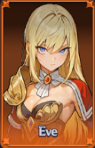
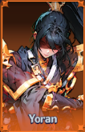

Counter Mythic Tier List
Updated July 2026
Overview
These Mythic Avatars provide the highest value for Counter builds based on overall PvE performance, progression, and late-game scaling.

🏆 Tier Rankings
🥇 #1

Eve
Best overall Counter Mythic.
🥈 #2

Yoran
Excellent alternative with strong survivability.
🥉 #3

Raiden
Reliable Counter Mythic with consistent performance.
4️⃣ #4
Belgas
A good temporary choice while building toward stronger avatars.